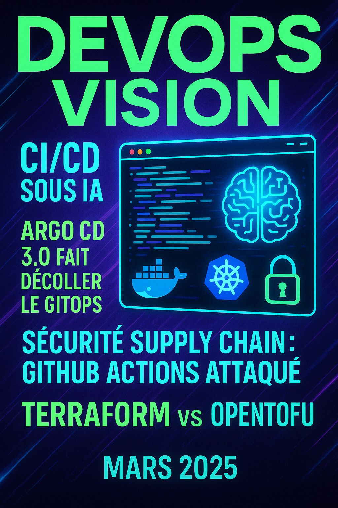

üåô
☀️
Bienvenue sur Mon Blog
Windows Subsystem for Linux
Docker
Java
Mac
DevOps
Git
Salesforce
Prompt Engineering
Veille
Windows 11 : Installer le sous-système Linux sans le Microsoft Store
Configuration Automatique de Docker avec WSL
Personnaliser la Gestion DNS dans WSL : Empêcher la Réinitialisation de resolv.conf
Comment Gérer et Récupérer l'Espace Disque avec WSL2
Résolution du problème de version iptables dans Ubuntu 22.04 en utilisant iptables-legacy
Installation de Systemd dans WSL 2 avec Genie
Optimisation du Développement Java avec Docker et IntelliJ IDEA
Tuto sur la configuration de Docker pour IntelliJ
Dockerisation d'un projet avec plusieurs pom et src/
Comment Modifier l'Adresse IP du Réseau Bridge de Docker
Ajouter une image dans un registre privé
Ehcache et Spring Boot : Accélérer les Performances des Applications Java
Guide pour Libérer de l'Espace sur un Mac : Astuces pour les Développeurs
Automatiser le Déploiement avec Ansible et GitLab CI/CD : Un Guide Complet
Guide Pratique : Utilisation des Environnements dans GitLab CI/CD
Créer un Projet Ansible de Façon Professionnelle
Sécurisez vos secrets avec Ansible Vault
Git Flow et GitLab CI/CD : Un Guide Pratique
Sécuriser vos Déploiements CI/CD avec Vault et les ID Tokens de GitLab
Pense-bête Git Flow
Pense-bête Git
Utilisation de SOQL dans Salesforce
Prompt Engineering : Un Guide Pratique
Prompt Engineering pour la veille java du mois
Prompt Engineering pour la veille IA du mois
Prompt Engineering pour la veille DevOps du mois
Java
DevOps
IA
2025
Mars 2025
Voir la veille
2025

Mars 2025
Voir la veille
2025
Mars 2025
Voir la veille